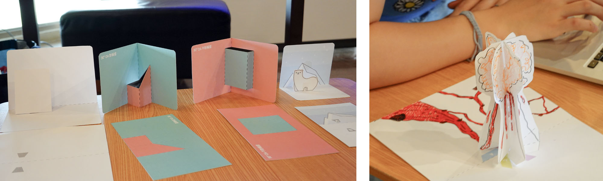

2020 Facebook 社群挑戰
2020 Facebook 社群挑戰
It's Now Winter -- AR 立體卡系列教學參加 2020 Facebook 社群挑戰（Developer Circles Community Challenge）贏得了進階教學組的全球大獎！
特別感謝政大 X College 學程，學程的工作坊是啟動這個計畫的重要契機以及養分，讓我們開設了各種實驗性工作坊；以及教學夥伴紙的工程師的紙藝指導、課程設計
- 2020 DCCC 競賽網站 @ Devpost：2020 Developer Circles Community Challenge
- 2020 DCCC 全球競賽得獎公告：Global Winners 2020 DCCC Announced
- 2020 DCCC 區域競賽入選公告：2020 DCCC Regional Winners Announced
- AR 相關的專案介紹 by Josh Beckwith：Dev Circles 2020 Hackathon Tutorials for Spark AR
計畫簡介
這個系列教學是針對喜歡創作、手做，但不熟悉數位工具的同學所設計
這個系列教學由三個 AR 立體卡片專案組成。每個專案會先從手作的立體卡片開始，藉此引起同學的興趣；之後再幫立體卡片加上 AR 效果，讓數位部分的製作變成卡片的延伸，降低同學對於數位工具的抵抗。於此同時，實體卡片結合 AR 的表現方式，本身也具有特別的美感
發想
我在政大的 X College 程擔任過幾個學期的工作坊講師，設計過幾種不同類型的數位工作坊。
學程裡的同學多半是人文相關領域的同學，而且這些同學通常都很有美感，而且具備創作的能量。而 X 學程近幾年都會開設一些程式設計相關的課程，以讓課程更多元、領域更廣泛。然而，這學程內部分的同學對這類課程（我負責的數位工作坊）興趣缺缺。因此，我就在思考，怎麼樣的課程才能夠吸引他們
而今年在規劃工作坊之前，我剛好在參與一個互動立體書的計劃。於是我就突然想到，不如乾脆就來做 AR 立體卡片的教學吧，而且使用 Spark AR 的話，即使新手也很容易學
因此，就有了這個教學計畫的誕生
計畫內容
這個計畫由三個 AR 立體卡片專案組成，每個專案分別教授 Spark AR 不同面向的功能
Project A -- 雪人，是針對新手設計的基本功能教學
例如：如何建立專案、如何匯入圖片到專案內、如何設定圖片辨識功能、如何在場景內新增物件等。在這個教學裡，每一個步驟都有非常詳細的截圖，以便新手在不熟悉介面操作的狀況下，也能依照教學完成
Project B -- 木屋，教一些比較進階的設定
像是材質的選項、圖層的設定、混色選項（Blending Option）、以及製作遮罩的技巧等。在這個專案裡，我們會讓同學建造一個房間，然後透過遮罩的技巧，製作「從窗外看進房屋內」的 AR 效果
Project C -- 小樹，則想要讓同學嘗試製作 3D
在我過去的經驗，同學通常都會對 3D 軟體有點抗拒。因此在這個教學裡，設計讓同學們使用許多 2D 的圖片來拼出一張 3D 的長椅，讓他們使用他們熟悉的工具（像是 Photoshop 或 Illustrator）來製作 3D。同學們會發現，其實 3D 製作並沒有想像中那麼困難，3D 軟體並不可怕。而希望這能夠成為他們未來持續往這個方向發展的契機
課程設計發想
這個課程系列一開始就決定要分成三個作品，因此就先由簡入深，分別思考三個作品裡面要教的 AR 內容，在針對這些內容設計了三張不同的立體卡片。這幾個 AR 立體卡的設計，都和我過去的幾個 AR 專案相關，像是Liz & Remi 婚禮小卡、Tiny Workshop Project、雪花實驗室
過程中的挑戰
最困難的部分，應該還是課程設計本身。如何讓課程看起來很吸引人？如何讓卡片和 AR 的內容都能由簡入深？我們花了很多時間思考、設計課程內容
另外，由於這次的 Facebook 社群挑戰要求所有內容都要開源，因此所有的素材都必須要自己從頭打造，包括卡片的設計、以及卡片上的插畫、AR 內容用的插畫檔案等。這些檔案的準備、卡片的課前試做等，花了我非常多的時間
不過最後成果還不錯，相當滿意！

值得一提的事情
作為一個數位工作者（尤其經常製作 AR 相關的內容），我一直以來都覺得 AR 和實體的物件結合時最有趣，尤其喜歡跟插畫、卡片之類的。然而在目前 AR 的社群裡，這類型的作品非常少見。Spark AR 來說的話，臉部的濾鏡是最多人做的
而我覺得這個教學系列能夠完整的呈現我對 AR 的想法，也藉由這次參加比賽的機會，希望讓更多人喜歡這類型的創作，希望越來越多人喜歡把 AR 和實體創作結合
我學到了什麼
這個專案讓我開始練習手作卡片，並且實際使用 iPad Procreate 完成了幾張圖（好久以前就買了，終於有動力完成幾張圖！），這些都是我經常想做，卻一直沒做的事情
另外我也發現寫教學實在是很花時間 ... 讓我們感謝那些願意在網路上寫免費教學文章的人，謝謝你們無私的分享！！！！
It's Now Winter 計畫的下一步
這只是第一步，將來我會繼續多開發幾款 AR 立體卡片作品，也會繼續跟朋友紙的工程師合作。希望將來我們能推出更多的立體卡片教學！
